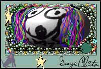

|
George Clinton News &
Information
George Clinton featured on Prince's new box set
September 16, 2002
Prince will release the
three-CD live box set, One Nite Alone . . . Live, this fall. His first-ever
live album. The third disc, culled from his after-show jams features a guest
appearance by George Clinton on "We Do This."
The set is exclusively
available only to members of Prince's NPG
Music Club. A commercial release is expected later this year.
George Clinton & Parliament Funkadelic
San Diego Street Scene 2002 a groove-filled extravaganza!
September 7, 2002
SignOnSanDiego.com
George Clinton & Parliament Funkadelic kicked out the jams at San Deigo's
largest music festival.
Check out this live video and exclusive interview from
SignOnSanDiego.com ...
Live Show Clip
Interview (Part 1)
Interview (Part
2)
George Clinton & Parliament Funkadelic: Live at the
Orpheum Theater
September 4, 2002 Pop
Matters
This was the best band in
America, maybe the best live band in American history, playing funky metal
music that is more avant-garde and influential and "difficult" than
anyone will ever give them credit for. This was everything I had every hoped it
would be from the time I was in 7th grade. This was three and a half hours of
communion at the only church that matters.
Legendary Funkmaster George Clinton Joins Sirius Satellite
Radio
July 25, 2002 CNN
"Sirius Satellite
Radio, the premier satellite radio broadcaster, and George Clinton, the
visionary pioneer and architect of funk, have joined forces to bring the
artist's musical expertise and unique energy to Sirius listeners
coast-to-coast. As the newest member of the Sirius Sounding Board, Clinton will
now be heard across a variety of the company's 100 percent commercial
free music channels.."
Hear George's audio clips
on Sirius!
44:
The Express(Classic Soul)
George Clinton Featured on New Too $hort Album
Aug. 2, 2002 MTV News
"Using a forgotten
track funk legend George Clinton had recorded at Short's East Bay studio, the
rapper put together the bizarre song "The Movie." He described it as
having a vibe similar to Clinton's spacey band Parliament, "where you
don't know what they're singing about, but it still says
something."
Clinton
Funks Up the Apollo
July 1, 2002 Rolling Stone
"Clinton is still the coolest grandfather in the universe (and beyond)
..."
George Clinton & Parliament / Funkadelic jam at Detroit
Electronic Music Conference
MAY 27, 2002 Detroit
News
"It's a really good
environment and to share the stage with a mega-superstar like George Clinton is
a real honor."
George Clinton stars in Nike Commercial
MAY 24, 2002 Nike
Basketball
Nike's latest basketball ad
keeps the funk - and the heart and soul of hoop - alive. The ad stars George
Clinton, Snoop Dogg, Bootsy Collins and the original line-up of
Parliament/Funkadelic dressed in outrageous '70s fashion throwing a party in
space. In attendance are Elton Brand (L.A. Clippers), Derek Fisher (L.A.
Lakers), Lisa Leslie and Tamecka Dixon (WNBA L.A. Sparks), Cuttino Mobley
(Houston Rockets), and prospective NBA'er Dajuan Wagner. The ad debuts today to
hit the playoffs.
Click here to see the commercial at
www.nikebasketball.com!
George Clinton at UCLA - Interview
May 10, 2002 U-Wire
"It's probably one of the only kinds of music that kids
can jam to the same music that their parents or older brothers and sisters jam
to," Clinton said. "Everybody can funk together; it's like a circus.
The whole family can go see some funk."
George
Clinton jams with Prince & Alicia Keys in NYC
April 10, 2002
MTV.com
"Dr. Funkenstein
wandered out early in the show, rasping, "We do this / This is what we
do" over a basic funk groove. P-Funker Gary Shider also hung back and
later provided vocals on Sly and the Family Stone's "Dance to the
Music."
Parliament/Funkadelic voted "6" in SPIN Mag list of
50 Greatest Bands of All Time
Music magazine SPIN editors choose Parliament/Funkadelic "6" in their
list of 50 Greatest Bands of All Time, beating out legends like The Rolling
Stones, U2, and Metallica. Be sure to get a copy of the latest issue and read
the details.
The Hartford Courant Concert
Review
November 20, 2001"To
paraphrase an old Rufus tune, once he got started at the Webster Theatre Sunday
night, George Clinton proved he still can kick it when it comes to
funk."
U-Wire Concert Review
October 22,
2001"ATHENS, Ohio -- Those in attendance Saturday night at
Templeton-Blackburn Alumni Memorial Auditorium got what they wanted -- they got
the funk."
|